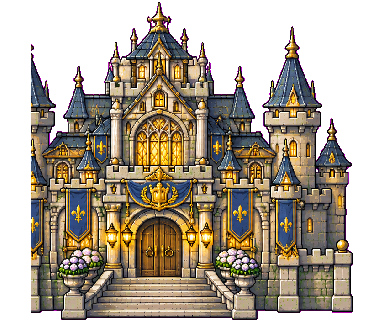

V2N REBOOT
Fantasy Village • ทดลองเล่นระบบใหม่
เริ่มต้นในหมู่บ้านแฟนตาซี เดินสำรวจ ช่วยชาวบ้าน เก็บทรัพยากร ทำงาน ปรับปรุงบ้าน เปิดพื้นที่ใหม่ และสร้างความสัมพันธ์กับ NPC ที่มีชีวิตของตัวเอง
คอมพิวเตอร์: WASD / ลูกศร = เดิน · E = โต้ตอบ · M = แผนที่ · Esc = เมนู
มือถือ: แตะพื้นเพื่อเดิน · แตะตัวละครหรืออาคารเพื่อโต้ตอบ · แนะนำแนวนอน
เริ่มเกม: กด New Game · ปุ่มในเกมบางส่วนยังเป็นภาษาสเปน
เกมต้นแบบแยกจาก V2N เดิม เซฟใหม่ไม่ยุ่งกับของเก่า